Preliminary
Derived Category
Derived Category
Homological Algebra and Derived Category
Complex and Chain Homotopy
Definition 2.1 (Category of Complexes). Let \mathcal{A} be an Abelian category. The category of complexes, denoted \operatorname{Ch}(\mathcal{A}), is defined by the following data:
Objects: Chain complexes A^\bullet = (\dots \to A^{n-1} \xrightarrow{d_A^{n-1}} A^n \xrightarrow{d_A^n} A^{n+1} \to \dots) where A^n \in \operatorname{Ob}(\mathcal{A}) for all n \in \mathbb{Z}, and the differentials satisfy \operatorname{d}_A^{n} \circ \operatorname{d}_A^{n-1} = 0.
Morphisms: A morphism of complexes f^\bullet: A^\bullet \to {\operatorname{B}}^\bullet is a sequence of morphisms f^n: A^n \to {\operatorname{B}}^n in \mathcal{A} that commute with the differentials, meaning \operatorname{d}_{\operatorname{B}}^n \circ f^n = f^{n+1} \circ \operatorname{d}_A^n for all n \in \mathbb{Z}.
Remark 2.1 (Embedding \mathcal{A} into \operatorname{Ch}(\mathcal{A})).
The Abelian category \mathcal{A}
naturally embeds into its category of complexes via a fully
faithful functor. Any object A \in
\operatorname{Ob}(\mathcal{A}) can be viewed as a complex
concentrated in degree zero:
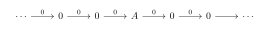
Definition 2.2 (Chain Homotopy). Let f^\bullet, g^\bullet: A^\bullet \to {\operatorname{B}}^\bullet be two morphisms of chain complexes in \operatorname{Ch}(\mathcal{A}). A chain homotopy between f^\bullet and g^\bullet is a sequence of morphisms h^n: A^n \to {\operatorname{B}}^{n-1} in \mathcal{A} such that for all n \in \mathbb{Z}, the following holds: f^n - g^n = \operatorname{d}_{\operatorname{B}}^{n-1} \circ h^n + h^{n+1} \circ \operatorname{d}_A^n If such a sequence exists, we say f^\bullet and g^\bullet are chain homotopic and denote this relation by f^\bullet \sim g^\bullet.
Proposition 2.1 (Chain Homotopies Preserve Cohomology). Let f^\bullet, g^\bullet: A^\bullet \to {\operatorname{B}}^\bullet be chain homotopic morphisms in \operatorname{Ch}(\mathcal{A}). Then, for every n \in \mathbb{Z}, they induce identical morphisms on cohomology: \operatorname{H}^n(f^\bullet) = \operatorname{H}^n(g^\bullet) : \operatorname{H}^n(A^\bullet) \to \operatorname{H}^n({\operatorname{B}}^\bullet)
Proof. Let h^n: A^n \to {\operatorname{B}}^{n-1} be a chain homotopy satisfying f^n - g^n = \operatorname{d}_{\operatorname{B}}^{n-1} \circ h^n + h^{n+1} \circ \operatorname{d}_A^n.
Recall that the n-th cohomology is defined as \operatorname{H}^n(A^\bullet) = \ker(\operatorname{d}_A^n) / \operatorname{im}(\operatorname{d}_A^{n-1}). Let [z] \in \operatorname{H}^n(A^\bullet) be a cohomology class represented by a cocycle z \in \ker(\operatorname{d}_A^n). This means \operatorname{d}_A^n(z) = 0.
We want to examine how the difference (f^n - g^n) acts on the cocycle z. Evaluating the homotopy equation at z, we obtain: \begin{align*} (f^n - g^n)(z) &= (\operatorname{d}_{\operatorname{B}}^{n-1} \circ h^n + h^{n+1} \circ \operatorname{d}_A^n)(z) \\ &= \operatorname{d}_{\operatorname{B}}^{n-1}(h^n(z)) + h^{n+1}(\operatorname{d}_A^n(z)) \\ &= \operatorname{d}_{\operatorname{B}}^{n-1}(h^n(z)) + h^{n+1}(0) \\ &= \operatorname{d}_{\operatorname{B}}^{n-1}(h^n(z)) \end{align*}
The result, \operatorname{d}_{\operatorname{B}}^{n-1}(h^n(z)), is by definition an element of \operatorname{im}(\operatorname{d}_{\operatorname{B}}^{n-1}), which constitutes the coboundaries in {\operatorname{B}}^\bullet. Because two cocycles define the same cohomology class if they differ by a coboundary, the difference (f^n(z) - g^n(z)) vanishes in the quotient \operatorname{H}^n({\operatorname{B}}^\bullet).
Therefore, [f^n(z)] = [g^n(z)], which implies \operatorname{H}^n(f^\bullet) = \operatorname{H}^n(g^\bullet). ◻
Category of Complexes
Proposition 2.1 (The Category of Complexes is Abelian). If \mathcal{A} is an Abelian category, then the category of complexes \operatorname{Ch}(\mathcal{A}) is also an Abelian category.
Proof. To prove that \operatorname{Ch}(\mathcal{A}) is an Abelian category when \mathcal{A} is abelian, we verify the standard axioms of an Abelian category step by step, showing that all constructions can be performed componentwise.
Step 1. \operatorname{Ch}(\mathcal{A}) is Additive First, we observe that \operatorname{Ch}(\mathcal{A}) inherits the additive structure from \mathcal{A}:
Hom-groups: For any two complexes A^\bullet and B^\bullet, the set of chain maps \operatorname{Hom}_{\operatorname{Ch}(\mathcal{A})}(A^\bullet, B^\bullet) forms an Abelian group under pointwise addition: (f + g)_n = f_n + g_n for all n \in \mathbb{Z}. Composition is easily seen to be bilinear.
Zero Object: The complex 0^\bullet consisting of the zero object 0 \in \mathcal{A} in every degree with zero differential maps is both initial and terminal in \operatorname{Ch}(\mathcal{A}).
Finite Biproducts: Given two complexes A^\bullet and B^\bullet, their biproduct (direct sum) A^\bullet \oplus B^\bullet is defined in each degree n by (A \oplus B)_n = A_n \oplus B_n, with the differential \operatorname{d}_n^{A \oplus B} = \operatorname{d}_n^A \oplus \operatorname{d}_n^B. This inherits the universal properties of both product and coproduct from \mathcal{A}.
Step 2. Existence of Kernels and Cokernels Let f: A^\bullet \to B^\bullet be a chain map. We construct its kernel and cokernel degree-by-degree.
Kernel: In each degree n, let K_n = \ker(f_n: A_n \to B_n), which exists since \mathcal{A} is abelian. Since f_{n-1} \circ \operatorname{d}_n^A \circ \iota_n = \operatorname{d}_n^B \circ f_n \circ \iota_n = 0 (where \iota_n: K_n \to A_n is the canonical injection), the universal property of \ker(f_{n-1}) induces a unique differential \operatorname{d}_n^K: K_n \to K_{n-1} making the following diagram commute:
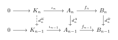
The complex K^\bullet along with the chain map \iota: K^\bullet \to A^\bullet satisfies the universal property of the kernel in \operatorname{Ch}(\mathcal{A}).Cokernel: Dually, the cokernel is constructed degree-by-degree by setting C_n = \mathrm{coker}(f_n: A_n \to B_n). The universal property of \mathrm{coker}(f_n) induces a unique differential \operatorname{d}_n^C: C_n \to C_{n-1} such that the projection p: B^\bullet \twoheadrightarrow C^\bullet becomes a chain map.
Step 3. Canonical Isomorphism between Coimage and Image Let f: A^\bullet \to B^\bullet be a chain map. By definition: \operatorname{Coim} f = \mathrm{coker}(\ker f \to A^\bullet) \quad \text{and} \quad \operatorname{im} f = \ker(B^\bullet \to \mathrm{coker}\, f). Since we have shown that kernels and cokernels in \operatorname{Ch}(\mathcal{A}) are computed strictly degree-by-degree, it follows that the coimage and image complexes are also formed componentwise: (\operatorname{Coim} f)_n \cong \operatorname{Coim}(f_n) \quad \text{and} \quad (\operatorname{im} f)_n \cong \operatorname{im}(f_n). Because \mathcal{A} is an Abelian category, for each n \in \mathbb{Z} there is a canonical isomorphism \bar{f}_n: \operatorname{Coim}(f_n) \xrightarrow{\cong} \operatorname{im}(f_n).
By the naturality of this isomorphism in \mathcal{A}, these components \bar{f}_n commute with the induced differentials of \operatorname{Coim} f and \operatorname{im} f. Therefore, they assemble into a global isomorphism of complexes \bar{f}: \operatorname{Coim} f \xrightarrow{\cong} \operatorname{im} f.
Conclusively, \operatorname{Ch}(\mathcal{A}) satisfies all axioms of an Abelian category. ◻
Properties of Category of Complexs
Theorem 2.1 (). Let \mathcal{A} be an Abelian category. Then the category of cochain complexes over \mathcal{A}, denoted by \mathsf{Ch}(\mathcal{A}), is also an Abelian category.
Proof. To prove that \mathsf{Ch}(\mathcal{A}) is an Abelian category, we must verify that it satisfies the following standard axioms of an Abelian category:
\mathsf{Ch}(\mathcal{A}) has a zero object.
\mathsf{Ch}(\mathcal{A}) has finite biproducts (direct sums).
Every morphism in \mathsf{Ch}(\mathcal{A}) has a kernel and a cokernel.
For any morphism f^\bullet, the canonical morphism from its coimage to its image, \bar{f}^\bullet: \operatorname{coim}(f^\bullet) \to \operatorname{im}(f^\bullet), is an isomorphism.
We will construct these structures degreewise (componentwise) in \mathcal{A} and verify their universal properties.
Step 1. Existence of a Zero Object Let 0 be the zero object of \mathcal{A}. We define the zero cochain complex 0^\bullet \in \mathsf{Ch}(\mathcal{A}) by setting 0^n = 0 and the differentials \operatorname{d}^n = 0: 0^n \to 0^{n+1} for all n \in \mathbb{Z}. Since 0 is both initial and terminal in \mathcal{A} at each degree, it is straightforward to verify that for any cochain complex X^\bullet \in \mathsf{Ch}(\mathcal{A}), there exist unique cochain maps 0^\bullet \to X^\bullet and X^\bullet \to 0^\bullet. Thus, 0^\bullet is the zero object of \mathsf{Ch}(\mathcal{A}).
Step 2. Existence of Finite Biproducts Let X^\bullet and Y^\bullet be two cochain complexes in \mathsf{Ch}(\mathcal{A}). For each n \in \mathbb{Z}, let X^n \oplus Y^n be the biproduct in \mathcal{A}, with canonical injections i_{X}^n, i_{Y}^n and projections p_{X}^n, p_{Y}^n. We define the cochain complex (X \oplus Y)^\bullet by setting: (X \oplus Y)^n = X^n \oplus Y^n with the differential \operatorname{d}^{X \oplus Y}_n = \operatorname{d}^X_n \oplus \operatorname{d}^Y_n: X^n \oplus Y^n \to X^{n+1} \oplus Y^{n+1}. It is easy to check that: \operatorname{d}^{X \oplus Y}_{n+1} \circ \operatorname{d}^{X \oplus Y}_n = (\operatorname{d}^X_{n+1} \circ \operatorname{d}^X_n) \oplus (\operatorname{d}^Y_{n+1} \circ \operatorname{d}^Y_n) = 0 \oplus 0 = 0 The injections i_{X}^\bullet, i_{Y}^\bullet and projections p_{X}^\bullet, p_{Y}^\bullet defined degreewise assemble into cochain maps because they commute with the differentials. They satisfy the biproduct relations degreewise, hence (X \oplus Y)^\bullet is indeed the biproduct of X^\bullet and Y^\bullet in \mathsf{Ch}(\mathcal{A}).
Step 3. Existence of Kernels and Cokernels Let
f^\bullet: X^\bullet \to
Y^\bullet be a cochain map in \mathsf{Ch}(\mathcal{A}). For each
n \in \mathbb{Z}, let \iota^n: K^n \to X^n be the kernel of
f^n: X^n \to Y^n in \mathcal{A}. Since f^{n+1} \circ \operatorname{d}^X_n \circ
\iota^n = \operatorname{d}^Y_n \circ f^n \circ \iota^n = 0,
the universal property of the kernel K^{n+1} = \operatorname{ker}(f^{n+1})
implies there exists a unique morphism \operatorname{d}^K_n: K^n \to K^{n+1}
making the following diagram commute:
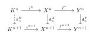
Dually, by taking the cokernel degreewise, we obtain the cokernel complex C^\bullet where C^n = \operatorname{coker}(f^n), with differentials induced by the universal property of cokernels. Thus, every morphism in \mathsf{Ch}(\mathcal{A}) has a kernel and a cokernel.
Step 4. Isomorphism of Coimage and Image Let f^\bullet: X^\bullet \to Y^\bullet be a cochain map. In any category with kernels and cokernels, we can define the image and coimage of f^\bullet: \operatorname{im}(f^\bullet) = \operatorname{ker}(\operatorname{coker}(f^\bullet)), \quad \operatorname{coim}(f^\bullet) = \operatorname{coker}(\operatorname{ker}(f^\bullet)) Because kernels and cokernels in \mathsf{Ch}(\mathcal{A}) are computed degreewise, it follows that the image and coimage complexes are also computed degreewise: (\operatorname{im} f)^n = \operatorname{im}(f^n), \quad (\operatorname{coim} f)^n = \operatorname{coim}(f^n) For each n \in \mathbb{Z}, there is a canonical morphism \bar{f}^n: \operatorname{coim}(f^n) \to \operatorname{im}(f^n) in \mathcal{A}. Since \mathcal{A} is an Abelian category, \bar{f}^n is an isomorphism for every n.
These morphisms \bar{f}^n commute with the induced differentials on the coimage and image complexes, assembling into a cochain map \bar{f}^\bullet: \operatorname{coim}(f^\bullet) \to \operatorname{im}(f^\bullet). Since \bar{f}^\bullet is an isomorphism at each degree n, it is an isomorphism in the category of cochain complexes \mathsf{Ch}(\mathcal{A}).
Since all four axioms are satisfied, we conclude that \mathsf{Ch}(\mathcal{A}) is an Abelian category. ◻
Let \mathcal{A} and \mathcal{B} be additive categories (in particular, Abelian categories). We denote by \mathsf{Ch}(\mathcal{A}) and \mathsf{Ch}(\mathcal{B}) their respective categories of cochain complexes. In this note, we prove that any additive functor between the underlying categories naturally induces a functor on the corresponding cochain complex categories, and that this construction preserves adjoint situations.
Proposition 2.1 (). Any additive functor F: \mathcal{A} \to \mathcal{B} naturally induces a functor F_*: \mathsf{Ch}(\mathcal{A}) \to \mathsf{Ch}(\mathcal{B}).
Proof. We define the induced assignment F_* on objects and morphisms of \mathsf{Ch}(\mathcal{A}) degreewise:
On Objects: For a cochain complex X^\bullet = (X^n, \operatorname{d}_X^n)_{n \in \mathbb{Z}} in \mathsf{Ch}(\mathcal{A}), we define F_*(X^\bullet) to be the sequence of objects (F(X^n))_{n \in \mathbb{Z}} equipped with the differentials: \operatorname{d}_{F_*(X)}^n = F(\operatorname{d}_X^n): F(X^n) \to F(X^{n+1}) Since F is an additive functor, it preserves zero morphisms and compositions. Therefore, we have: \operatorname{d}_{F_*(X)}^{n+1} \circ \operatorname{d}_{F_*(X)}^n = F(\operatorname{d}_X^{n+1}) \circ F(\operatorname{d}_X^n) = F(\operatorname{d}_X^{n+1} \circ \operatorname{d}_X^n) = F(0) = 0 Thus, F_*(X^\bullet) is a well-defined cochain complex in \mathsf{Ch}(\mathcal{B}).
On Morphisms: For a cochain map f^\bullet: X^\bullet \to Y^\bullet, which consists of a family of morphisms f^n: X^n \to Y^n in \mathcal{A} satisfying f^{n+1} \circ \operatorname{d}_X^n = \operatorname{d}_Y^n \circ f^n, we define F_*(f^\bullet) to be the family of morphisms: (F_*(f^\bullet))^n = F(f^n): F(X^n) \to F(Y^n) Applying F to the commutativity condition of f^\bullet, we obtain: F(f^{n+1}) \circ F(\operatorname{d}_X^n) = F(f^{n+1} \circ \operatorname{d}_X^n) = F(\operatorname{d}_Y^n \circ f^n) = F(\operatorname{d}_Y^n) \circ F(f^n) This shows that F_*(f^\bullet) commutes with the induced differentials, making it a valid cochain map in \mathsf{Ch}(\mathcal{B}).
The identity preservation F_*(\operatorname{id}_{X^\bullet}) = \operatorname{id}_{F_*(X^\bullet)} and composition preservation F_*(g^\bullet \circ f^\bullet) = F_*(g^\bullet) \circ F_*(f^\bullet) follow directly from the functoriality of F at each degree n. Hence, F_* is a functor. ◻
Theorem 2.1 (). Let L: \mathcal{A} \to \mathcal{B} and R: \mathcal{B} \to \mathcal{A} be additive functors. If L is left adjoint to R (denoted L \dashv R), then the induced functor L_*: \mathsf{Ch}(\mathcal{A}) \to \mathsf{Ch}(\mathcal{B}) is left adjoint to R_*: \mathsf{Ch}(\mathcal{B}) \to \mathsf{Ch}(\mathcal{A}) (denoted L_* \dashv R_*).
Proof. Since L \dashv R, there exist natural transformations: \eta: \operatorname{Id}_{\mathcal{A}} \to R \circ L \quad \text{(the unit)} \quad \text{and} \quad \varepsilon: L \circ R \to \operatorname{Id}_{\mathcal{B}} \quad \text{(the counit)} satisfying the triangle identities: \begin{equation} (R\varepsilon) \circ (\eta R) = \operatorname{id}_R \quad \text{and} \quad (\varepsilon L) \circ (L\eta) = \operatorname{id}_L \end{equation}
We define the unit \eta^\bullet:
\operatorname{Id}_{\mathsf{Ch}(\mathcal{A})} \to R_* \circ
L_* and counit \varepsilon^\bullet: L_* \circ R_* \to
\operatorname{Id}_{\mathsf{Ch}(\mathcal{B})} degreewise.
For any cochain complex X^\bullet \in
\mathsf{Ch}(\mathcal{A}), let: \eta^n_X = \eta_{X^n}: X^n \to
R(L(X^n)) To show that the family (\eta^n_X)_{n \in \mathbb{Z}}
constitutes a cochain map \eta^\bullet_X: X^\bullet \to
R_*(L_*(X^\bullet)), we must verify that it commutes with
the differentials. Since \eta:
\operatorname{Id}_{\mathcal{A}} \to R \circ L is a natural
transformation, the diagram
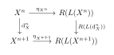
Dually, for any cochain complex Y^\bullet \in \mathsf{Ch}(\mathcal{B}), we define the counit degreewise by: \varepsilon^n_Y = \varepsilon_{Y^n}: L(R(Y^n)) \to Y^n which similarly assembles into a natural cochain map \varepsilon^\bullet_Y: L_*(R_*(Y^\bullet)) \to Y^\bullet.
Finally, we verify the triangle identities for \eta^\bullet and \varepsilon^\bullet in \mathsf{Ch}(\mathcal{B}) and \mathsf{Ch}(\mathcal{A}). For any complex Y^\bullet \in \mathsf{Ch}(\mathcal{B}), the composition of cochain maps R_*(Y^\bullet) \xrightarrow{\eta^\bullet_{R_*(Y)}} R_*(L_*(R_*(Y^\bullet))) \xrightarrow{R_*(\varepsilon^\bullet_Y)} R_*(Y^\bullet) at each degree n is given by: (R_*(\varepsilon^\bullet_Y))^n \circ (\eta^\bullet_{R_*(Y)})^n = R(\varepsilon_{Y^n}) \circ \eta_{R(Y^n)} By the first triangle identity in , this is equal to \operatorname{id}_{R(Y^n)} for every n \in \mathbb{Z}. Thus, (R_* \varepsilon^\bullet) \circ (\eta^\bullet R_*) = \operatorname{id}_{R_*}.
Dually, for any complex X^\bullet \in \mathsf{Ch}(\mathcal{A}), the composition L_*(X^\bullet) \xrightarrow{L_*(\eta^\bullet_X)} L_*(R_*(L_*(X^\bullet))) \xrightarrow{\varepsilon^\bullet_{L_*(X)}} L_*(X^\bullet) at each degree n reduces to: \varepsilon_{L(X^n)} \circ L(\eta_{X^n}) which is equal to \operatorname{id}_{L(X^n)} by the second triangle identity in . Thus, (\varepsilon^\bullet L_*) \circ (L_* \eta^\bullet) = \operatorname{id}_{L_*}.
Since both triangle identities hold, the induced natural transformations \eta^\bullet and \varepsilon^\bullet exhibit L_* as the left adjoint of R_*. ◻
Homotopy Category
Remark 2.1 (Termwise Construction). The Abelian structure on \operatorname{Ch}(\mathcal{A}) is inherited directly from \mathcal{A}. Operations such as kernels, cokernels, images, and finite direct sums are all computed termwise. For example, if f^\bullet: A^\bullet \to {\operatorname{B}}^\bullet is a morphism of complexes, its kernel is the complex given by \ker(f)^n = \ker(f^n) at each degree n, equipped with differentials canonically induced by the differentials of A^\bullet.
Definition 2.3 (The Homotopy Category). Let \mathcal{A} be an Abelian category. The homotopy category of complexes, denoted \mathcal{K}(\mathcal{A}), is defined by the following data:
Objects: The objects of \mathcal{K}(\mathcal{A}) are identical to the objects of \operatorname{Ch}(\mathcal{A}); they are simply chain complexes in \mathcal{A}.
Morphisms: The morphisms are the homotopy classes of chain complex morphisms. Specifically, for any two complexes A^\bullet and {\operatorname{B}}^\bullet, the Hom-set in \mathcal{K}(\mathcal{A}) is the quotient Abelian group: \operatorname{Hom}_{\mathcal{K}(\mathcal{A})}(A^\bullet, {\operatorname{B}}^\bullet) = \operatorname{Hom}_{\operatorname{Ch}(\mathcal{A})}(A^\bullet, {\operatorname{B}}^\bullet) / \sim where f^\bullet \sim g^\bullet if and only if they are chain homotopic (i.e., their difference f^\bullet - g^\bullet is null-homotopic).
Remark 2.1 (Additive Structure of \mathcal{K}(\mathcal{A})). By passing to homotopy classes, we resolve the issue of non-unique representatives for cohomologically trivial morphisms. However, a crucial consequence is that while \operatorname{Ch}(\mathcal{A}) is an Abelian category, the homotopy category \mathcal{K}(\mathcal{A}) is, in general, only an additive category. It lacks general kernels and cokernels, which motivates the introduction of mapping cones and triangulated category structures.
Quasi-Isomorphism
Definition 2.4 (Quasi-Isomorphism). Let \mathcal{A} be an Abelian category. A morphism of chain complexes f^\bullet: A^\bullet \to {\operatorname{B}}^\bullet in \operatorname{Ch}(\mathcal{A}) (and consequently in \mathcal{K}(\mathcal{A})) is called a quasi-isomorphism if it induces an isomorphism on cohomology objects for all n \in \mathbb{Z}: \operatorname{H}^n(f^\bullet): \operatorname{H}^n(A^\bullet) \xrightarrow{\sim} \operatorname{H}^n({\operatorname{B}}^\bullet)
Proposition 2.1 (Quasi-Isomorphisms Form a Multiplicative System). Let Q denote the class of all quasi-isomorphisms in the homotopy category \mathcal{K}(\mathcal{A}). The class Q satisfies the conditions of a localizing class (or multiplicative system):
Closure under composition: The identity morphisms are in Q, and if f, g \in Q are composable, then g \circ f \in Q.
Ore condition (Homotopy Pullbacks): For any quasi-isomorphism s: {\operatorname{Z}}^\bullet \to Y^\bullet and any morphism f: X^\bullet \to Y^\bullet in \mathcal{K}(\mathcal{A}), there exists a complex W^\bullet, a quasi-isomorphism t: W^\bullet \to X^\bullet, and a morphism g: W^\bullet \to {\operatorname{Z}}^\bullet such that s \circ g = f \circ t in \mathcal{K}(\mathcal{A}).
(A dual statement holds for pushouts).
Proof. The closure under composition is immediate from the functoriality of the cohomology functor \operatorname{H}^n. If f and g are quasi-isomorphisms, then \operatorname{H}^n(g \circ f) = \operatorname{H}^n(g) \circ \operatorname{H}^n(f). Since \operatorname{H}^n(g) and \operatorname{H}^n(f) are isomorphisms in \mathcal{A}, their composition is also an isomorphism, meaning g \circ f \in Q.
For the Ore condition (the homotopy pullback), we construct the requiUniBlue complex W^\bullet explicitly. For each n \in \mathbb{Z}, define the term: W^n = X^n \oplus {\operatorname{Z}}^n \oplus Y^{n-1} equipped with the differential \operatorname{d}_W^n: W^n \to W^{n+1} given by: \operatorname{d}_W^n(x, z, y) = (\operatorname{d}_X^n(x), \operatorname{d}_{\operatorname{Z}}^n(z), -d_Y^{n-1}(y) + f^n(x) - s^n(z)) A direct calculation shows that \operatorname{d}_W^{n+1} \circ \operatorname{d}_W^n = 0, making W^\bullet a well-defined chain complex.
We define the canonical projections t: W^\bullet \to X^\bullet by t(x, z, y) = x and g: W^\bullet \to {\operatorname{Z}}^\bullet by g(x, z, y) = z. It is straightforward to verify that \operatorname{d}_X \circ t = t \circ \operatorname{d}_W and \operatorname{d}_Z \circ g = g \circ \operatorname{d}_W, so they are valid morphisms in \operatorname{Ch}(\mathcal{A}).
In the homotopy category \mathcal{K}(\mathcal{A}), we need the square to commute, meaning f \circ t \sim s \circ g. We can define a chain homotopy h^n: W^n \to Y^{n-1} simply by h^n(x, z, y) = y. Let us evaluate the homotopy condition: \begin{align*} (\operatorname{d}_Y^{n-1} \circ h^n + h^{n+1} \circ \operatorname{d}_W^n)(x, z, y) &= \operatorname{d}_Y^{n-1}(y) + h^{n+1}(\operatorname{d}_X(x), \operatorname{d}_Z(z), -d_Y(y) + f(x) - s(z)) \\ &= \operatorname{d}_Y^{n-1}(y) + (-d_Y^{n-1}(y) + f^n(x) - s^n(z)) \\ &= f^n(x) - s^n(z) \\ &= (f^n \circ t^n)(x, z, y) - (s^n \circ g^n)(x, z, y) \end{align*} Thus, f \circ t - s \circ g = \operatorname{d}_Y \circ h + h \circ \operatorname{d}_W, which means their difference is null-homotopic. Therefore, f \circ t = s \circ g holds in \mathcal{K}(\mathcal{A}).
Finally, we must show that t: W^\bullet \to X^\bullet is a quasi-isomorphism. Notice that t is surjective term-by-term, yielding a short exact sequence of complexes: 0 \to K^\bullet \to W^\bullet \xrightarrow{t} X^\bullet \to 0 where K^\bullet = \ker(t). The terms of K^\bullet are K^n = {\operatorname{Z}}^n \oplus Y^{n-1}, with the induced differential \operatorname{d}_K(z, y) = (\operatorname{d}_Z(z), -d_Y(y) - s(z)).
To compute the cohomology of K^\bullet, observe that it naturally fits into another short exact sequence of complexes: 0 \to Y^\bullet[-1] \xrightarrow{i} K^\bullet \xrightarrow{p} {\operatorname{Z}}^\bullet \to 0 where Y^\bullet[-1] is the shifted complex (with degree n term Y^{n-1} and differential -d_Y), i(y) = (0, y), and p(z, y) = z. This induces a long exact sequence in cohomology:
By the definition of the connecting homomorphism \delta (tracing an element z \in \ker(\operatorname{d}_Z) back through p to (z, 0) and applying \operatorname{d}_K), we find \operatorname{d}_K(z, 0) = (0, -s(z)), which pulls back via i to -s(z). Thus, the connecting map \delta: \operatorname{H}^{n-1}({\operatorname{Z}}^\bullet) \to \operatorname{H}^n(Y^\bullet[-1]) = \operatorname{H}^{n-1}(Y^\bullet) is precisely -\operatorname{H}^{n-1}(s).
Since s is assumed to be a quasi-isomorphism, \operatorname{H}^{n-1}(s) is an isomorphism for all n. Consequently, \delta is an isomorphism. By exactness of the long sequence, this forces \operatorname{H}^n(K^\bullet) = 0 for all n, meaning K^\bullet is an acyclic complex.
Returning to the long exact sequence associated with the first short exact sequence 0 \to K^\bullet \to W^\bullet \xrightarrow{t} X^\bullet \to 0: \dots \to \operatorname{H}^n(K^\bullet) \to \operatorname{H}^n(W^\bullet) \xrightarrow{\operatorname{H}^n(t)} \operatorname{H}^n(X^\bullet) \to \operatorname{H}^{n+1}(K^\bullet) \to \dots Because \operatorname{H}^n(K^\bullet) = \operatorname{H}^{n+1}(K^\bullet) = 0, the map \operatorname{H}^n(t) is squeezed between zeroes and must be an isomorphism for all n. Thus, t \in Q, and the Ore condition is completely verified. ◻
The Derived Category
Definition 2.5 (The Derived Category). Let \mathcal{A} be an Abelian category, and let Q be the multiplicative system of quasi-isomorphisms in \mathcal{K}(\mathcal{A}). The derived category of \mathcal{A}, denoted \mathbf{D}(\mathcal{A}), is defined as the localization of the homotopy category \mathcal{K}(\mathcal{A}) with respect to Q: \mathbf{D}(\mathcal{A}) \coloneqq \mathcal{K}(\mathcal{A})[Q^{-1}] Explicitly, this means:
Objects: The objects of \mathbf{D}(\mathcal{A}) are identical to those of \operatorname{Ch}(\mathcal{A}) and \mathcal{K}(\mathcal{A}).
Morphisms: A morphism from A^\bullet to {\operatorname{B}}^\bullet in \mathbf{D}(\mathcal{A}) is an equivalence class of “left fractions” (or roofs), represented by a diagram in \mathcal{K}(\mathcal{A}):
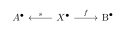
where s \in Q is a quasi-isomorphism and f is an arbitrary morphism in \mathcal{K}(\mathcal{A}).
Remark 2.1 (The Two-Step Quotient). To understand why we do not localize \operatorname{Ch}(\mathcal{A}) directly, note that passing through \mathcal{K}(\mathcal{A}) is essential. Localizing \operatorname{Ch}(\mathcal{A}) directly with respect to quasi-isomorphisms suffers from severe set-theoretic issues (the Hom-classes might be proper classes, not sets) and lacks a calculus of fractions. Factoring the construction as \operatorname{Ch}(\mathcal{A}) \to \mathcal{K}(\mathcal{A}) \to \mathbf{D}(\mathcal{A}) equips the intermediate category with mapping cones, fulfilling the Ore condition and ensuring the derived category inherits a robust triangulated structure. In \mathbf{D}(\mathcal{A}), two complexes are isomorphic if and only if they can be linked by a finite zig-zag of quasi-isomorphisms.
Since morphisms in the derived category \mathbf{D}(\mathcal{A}) are represented by “roofs” (or fractions), composing two morphisms requires finding a common denominator.
Suppose we have two morphisms in \mathbf{D}(\mathcal{A}) given by roofs:
and
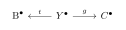
The composition of the two original roofs is then defined by
the outer roof:
xsZXQiXSxbMSwyLCJnIl0sWzAsMywiZiJdLFsxLDMsInQiLDJdLFswLDQsInMiLDJdLFs1LDAsInReXFxwcmltZSIsMl0sWzUsMSwiZl5cXHByaW1lIl1d
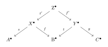
Triangulated Category
Definition 2.6 (Triangulated Category). A
triangulated category consists of an additive
category \mathcal{T}, an additive
auto-equivalence T: \mathcal{T}
\xrightarrow{\sim} \mathcal{T} (called the translation or
shift functor, commonly denoted X
\mapsto X[1]), and a specified class of
distinguished triangles of the form:
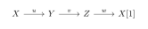
TR1: Any triangle isomorphic to a distinguished triangle is distinguished. Every morphism u: X \to Y can be completed to a distinguished triangle X \xrightarrow{u} Y \to Z \to X[1]. The trivial triangle X \xrightarrow{\operatorname{id}_X} X \to 0 \to X[1] is distinguished.
TR2 (Rotation): A triangle X \xrightarrow{u} Y \xrightarrow{v} Z \xrightarrow{w} X[1] is distinguished if and only if its rotated form Y \xrightarrow{v} Z \xrightarrow{w} X[1] \xrightarrow{-u[1]} Y[1] is distinguished.
TR3 (Morphisms of Triangles): Given two distinguished triangles and morphisms f: X \to X' and g: Y \to Y' making the first square of the triangles commute, there exists a (not necessarily unique) morphism h: Z \to Z' completing the diagram to a morphism of triangles.
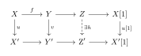
TR4 (Octahedral Axiom): Given distinguished triangles X \xrightarrow{u} Y \rightarrow Z' \rightarrow, \quad Y \xrightarrow{v} Z \rightarrow X' \rightarrow, \quad X \xrightarrow{vu} Z \rightarrow Y' \rightarrow, there exist morphisms Z' \xrightarrow{f} Y' and Y' \xrightarrow{g} X' such that (Z' \xrightarrow{f} Y' \xrightarrow{g} X' \xrightarrow{j[1]i} Z'[1]) \in T
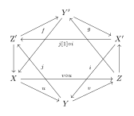
Proposition 2.1 (\mathcal{K}(\mathcal{A}) and \mathbf{D}(\mathcal{A}) are Triangulated). Both the homotopy category \mathcal{K}(\mathcal{A}) and the derived category \mathbf{D}(\mathcal{A}) carry natural structures of triangulated categories. The shift functor [1] is defined by shifting complexes leftward by one degree (with a sign change on differentials: \operatorname{d}_{A[1]}^n = -d_A^{n+1}), and the canonical localization functor \mathcal{K}(\mathcal{A}) \to \mathbf{D}(\mathcal{A}) is an exact functor of triangulated categories.
Remark 2.1 (Distinguished Triangles in \mathcal{K}(\mathcal{A}) and \mathbf{D}(\mathcal{A})). In both \mathcal{K}(\mathcal{A}) and \mathbf{D}(\mathcal{A}), the distinguished triangles are built using the mapping cone.
For any chain complex morphism f: X^\bullet \to Y^\bullet, its mapping cone C^\bullet(f) is defined in degree n as C^n(f) = X^{n+1} \oplus Y^n, equipped with the differential \operatorname{d}_{C(f)}^n(x, y) = (-d_X^{n+1}(x), f^{n+1}(x) + \operatorname{d}_Y^n(y)). This construction naturally yields a standard triangle in \mathcal{K}(\mathcal{A}): where i is the canonical inclusion and p is the canonical projection.
A triangle X^\bullet \to Y^\bullet \to {\operatorname{Z}}^\bullet \to X^\bullet[1] is defined to be distinguished in \mathcal{K}(\mathcal{A}) (respectively, in \mathbf{D}(\mathcal{A})) if and only if it is isomorphic in \mathcal{K}(\mathcal{A}) (respectively, in \mathbf{D}(\mathcal{A})) to the standard mapping cone triangle of some morphism.
Derived Functor
Definition 2.7 (Derived Functor of an n-ary Functor via Kan Extension). Let \mathcal{A}_1, \mathcal{A}_2, \dots, \mathcal{A}_n and \mathcal{B} be Abelian categories, and let F: \mathcal{A}_1 \times \dots \times \mathcal{A}_n \to \mathcal{B} be an additive functor in each variable. This canonically induces a functor on the product of homotopy categories, which we also denote by F: \mathcal{K}(\mathcal{A}_1) \times \dots \times \mathcal{K}(\mathcal{A}_n) \to \mathcal{K}(\mathcal{B}).
Let Q_{\mathcal{A}_i}: \mathcal{K}(\mathcal{A}_i) \to \mathbf{D}(\mathcal{A}_i) for each i \in \{1, \dots, n\} and Q_{\mathcal{B}}: \mathcal{K}(\mathcal{B}) \to \mathbf{D}(\mathcal{B}) be the respective canonical localization functors. We denote the product localization functor by \mathbf{Q}_{\mathcal{A}} \coloneqq Q_{\mathcal{A}_1} \times \dots \times Q_{\mathcal{A}_n}: \mathcal{K}(\mathcal{A}_1) \times \dots \times \mathcal{K}(\mathcal{A}_n) \to \mathbf{D}(\mathcal{A}_1) \times \dots \times \mathbf{D}(\mathcal{A}_n)
The Right Derived Functor \mathbf{R}F: \mathbf{D}(\mathcal{A}_1) \times \dots \times \mathbf{D}(\mathcal{A}_n) \to \mathbf{D}(\mathcal{B}) is defined as the Left Kan Extension of the composite functor Q_{\mathcal{B}} \circ F along \mathbf{Q}_{\mathcal{A}}: \mathbf{R}F \coloneqq \operatorname{Lan}_{\mathbf{Q}_{\mathcal{A}}} (Q_{\mathcal{B}} \circ F) By definition, this comes equipped with a universal natural transformation \eta: Q_{\mathcal{B}} \circ F \Rightarrow \mathbf{R}F \circ \mathbf{Q}_{\mathcal{A}}.
Dually, the Left Derived Functor \mathbf{L}F: \mathbf{D}(\mathcal{A}_1) \times \dots \times \mathbf{D}(\mathcal{A}_n) \to \mathbf{D}(\mathcal{B}) is defined as the Right Kan Extension of Q_{\mathcal{B}} \circ F along \mathbf{Q}_{\mathcal{A}}: \mathbf{L}F \coloneqq \operatorname{Ran}_{\mathbf{Q}_{\mathcal{A}}} (Q_{\mathcal{B}} \circ F) This comes equipped with a universal natural transformation \epsilon: \mathbf{L}F \circ \mathbf{Q}_{\mathcal{A}} \Rightarrow Q_{\mathcal{B}} \circ F.
Remark 2.1 (Universal Property in Derived Categories). Defining derived functors via Kan extensions elegantly captures their universal properties. For instance, the right derived functor \mathbf{R}F is the “closest” functor on the derived category that approximates F from the right. If any other functor G: \mathbf{D}(\mathcal{A}) \to \mathbf{D}(\mathcal{B}) admits a natural transformation from Q_{\mathcal{B}} \circ F, it must uniquely factor through \mathbf{R}F.
Remark 2.1 (Quasi-Isomorphisms and Injectives). The exactness of the resolution complexes guarantees that if we take two different injective resolutions I_1^\bullet and I_2^\bullet of the same complex X^\bullet, any quasi-isomorphism between them is actually a homotopy equivalence in \mathcal{K}(\mathcal{A}). Therefore, applying F yields complexes F(I_1^\bullet) and F(I_2^\bullet) that are homotopy equivalent, meaning they become canonically isomorphic once pushed into \mathbf{D}(\mathcal{B}). This demonstrates that the derived functor is well-defined.
Remark 2.1 (Bounded Derived Categories \mathbf{D}^*(\mathcal{A})). In the literature, you will frequently encounter the notation \mathbf{D}^*(\mathcal{A}), where the superscript * stands as a placeholder for a specific boundedness condition on the chain complexes. Specifically, we denote:
\mathbf{D}^+(\mathcal{A}): The derived category of complexes bounded below (i.e., X^n = 0 for n \ll 0).
\mathbf{D}^-(\mathcal{A}): The derived category of complexes bounded above (i.e., X^n = 0 for n \gg 0).
\mathbf{D}^b(\mathcal{A}): The derived category of bounded complexes (bounded both above and below).
\mathbf{D}(\mathcal{A}) (sometimes written without a superscript or \mathbf{D}^\emptyset): The unbounded derived category.
It is important to note that the entire theoretical framework discussed previously, including localizations, the existence of triangulated structures, and the formulation of derived functors, holds valid for all choices of * \in \{+, -, b, \emptyset\}.
Definition 2.8 (Total Complex of an n-Complex). Let \mathcal{B} be an Abelian category. An n-complex (or multi-complex) M^{\bullet, \dots, \bullet} in \mathcal{B} is a family of objects \{M^{i_1, \dots, i_n}\}_{i_1, \dots, i_n \in \mathbb{Z}} equipped with differentials \operatorname{d}_k: M^{i_1, \dots, i_n} \to M^{i_1, \dots, i_k+1, \dots, i_n} for each k \in \{1, \dots, n\} such that \operatorname{d}_k^2 = 0 and all differentials anti-commute: \operatorname{d}_j \operatorname{d}_k + \operatorname{d}_k \operatorname{d}_j = 0 for j \neq b.
The Total Complex \operatorname{Tot}(M)^{\bullet} is a single complex in \mathcal{K}(\mathcal{B}) whose m-th degree object and differential are defined as follows:
Objects: The object in degree m is the direct sum over all indices summing to m: \operatorname{Tot}(M)^m \coloneqq \bigoplus_{i_1 + \dots + i_n = m} M^{i_1, \dots, i_n}
Differentials: The total differential \operatorname{d}_{\text{tot}}: \operatorname{Tot}(M)^m \to \operatorname{Tot}(M)^{m+1} on each component M^{i_1, \dots, i_n} is given by the sum of the partial differentials: \operatorname{d}_{\text{tot}} \coloneqq \operatorname{d}_1 + \operatorname{d}_2 + \dots + \operatorname{d}_n
Proposition 2.1 (Computing n-ary Derived Functors via Partial
Acyclic Resolutions). (Grothendieck–Verdier Theory on
Bounded Derived Categories)
Let F: \mathcal{A}_1 \times \dots \times
\mathcal{A}_n \to \mathcal{B} be an additive functor in
each variable between Abelian categories. To compute the derived
functor, it is not necessary to resolve every variable; it
suffices to replace n-1 of the
variables by acyclic complexes.
Right Derived Functors: Assume that for each i \in \{1, \dots, n-1\}, the category \mathcal{A}_i has enough F-right-acyclic objects relative to the remaining variables. Let \mathbf{X}^\bullet = (X_1^\bullet, \dots, X_n^\bullet) \in \mathbf{D}^b(\mathcal{A}_1) \times \dots \times \mathbf{D}^b(\mathcal{A}_n) be a bounded complex. There exist quasi-isomorphisms X_i^\bullet \xrightarrow{\sim} I_i^\bullet into bounded-below F-right-acyclic complexes for i = 1, \dots, n-1.
The right derived functor evaluated at \mathbf{X}^\bullet can be computed by leaving the last variable unchanged: \mathbf{R}F(\mathbf{X}^\bullet) \cong Q_{\mathcal{B}}(\operatorname{Tot}(F(I_1^\bullet, \dots, I_{n-1}^\bullet, X_n^\bullet)))
Left Derived Functors: Dually, assume that for each i \in \{1, \dots, n-1\}, the category \mathcal{A}_i has enough F-left-acyclic objects relative to the remaining variables. There exist quasi-isomorphisms P_i^\bullet \xrightarrow{\sim} X_i^\bullet from bounded-above F-left-acyclic complexes for i = 1, \dots, n-1.
The left derived functor is computed via: \mathbf{L}F(\mathbf{X}^\bullet) \cong Q_{\mathcal{B}}(\operatorname{Tot}(F(P_1^\bullet, \dots, P_{n-1}^\bullet, X_n^\bullet)))
Cartan–Eilenberg Resolution
Let \mathcal{A} be an Abelian category, and let \mathcal{R} \subset \mathcal{A} be a class of objects that is adapted to a given functor (e.g., injective objects or F-acyclic objects). We assume that \mathcal{A} has enough \mathcal{R}-objects.
Given a bounded-below complex X^\bullet in \mathcal{A}: \dots \longrightarrow X^{p-1} \xrightarrow{\;\operatorname{d}_X^{p-1}\;} X^p \xrightarrow{\;\operatorname{d}_X^p\;} X^{p+1} \longrightarrow \dots we denote its cycles, boundaries, and homology objects at degree p by {\operatorname{Z}}^p(X^\bullet), {\operatorname{B}}^p(X^\bullet), and \operatorname{H}^p(X^\bullet) respectively.
Definition 2.9 (Cartan–Eilenberg Resolution). A Cartan–Eilenberg resolution (or C-E resolution) of X^\bullet is an upper-half-plane double complex I^{\bullet, \bullet} consisting of objects in \mathcal{R}, together with a chain map X^\bullet \to I^{\bullet, 0} such that for each p \in \mathbb{Z}:
The induced maps on the objects of cycles {\operatorname{Z}}^p(X^\bullet) \to {\operatorname{Z}}^p_I(I^{p, \bullet}) and boundaries {\operatorname{B}}^p(X^\bullet) \to {\operatorname{B}}^p_I(I^{p, \bullet}) are classical resolutions by elements in \mathcal{R}.
Consequently, the column I^{p, \bullet} is a resolution of X^p, and the induced map on homology \operatorname{H}^p(X^\bullet) \to \operatorname{H}^p_I(I^{p, \bullet}) is also a resolution in \mathcal{R}.
A C-E resolution cannot be constructed by simply choosing random resolutions for each X^p independently, as the horizontal differentials will fail the compatibility conditions. Instead, it must be engineeUniBlue from the internal homology skeletons using the Horseshoe Lemma recursively.
The construction proceeds through the following three steps for each degree p:
- Step 1: Resolving the Boundaries and Homology
-
Since \mathcal{A} has enough \mathcal{R}-objects, we can independently choose and construct classical resolutions for the boundary objects {\operatorname{B}}^p(X^\bullet) and the homology groups \operatorname{H}^p(X^\bullet) using elements in \mathcal{R}: {\operatorname{B}}^p(X^\bullet) \xrightarrow{\;\sim\;} P^{p, \bullet}, \quad \text{and} \quad \operatorname{H}^p(X^\bullet) \xrightarrow{\;\sim\;} Q^{p, \bullet} - Step 2: Lifting to the Cycles via the Horseshoe Lemma
-
Consider the canonical short exact sequence defining the homology group: 0 \longrightarrow {\operatorname{B}}^p(X^\bullet) \longrightarrow {\operatorname{Z}}^p(X^\bullet) \longrightarrow \operatorname{H}^p(X^\bullet) \longrightarrow 0 Since we have already constructed the resolutions P^{p, \bullet} for {\operatorname{B}}^p(X^\bullet) and Q^{p, \bullet} for \operatorname{H}^p(X^\bullet), we apply the Horseshoe Lemma. This guarantees the existence of a resolution R^{p, \bullet} for the cycles {\operatorname{Z}}^p(X^\bullet) such that R^{p, q} \cong P^{p, q} \oplus Q^{p, q}, fitting into a short exact sequence of complexes: 0 \longrightarrow P^{p, \bullet} \longrightarrow R^{p, \bullet} \longrightarrow Q^{p, \bullet} \longrightarrow 0 This ensures that {\operatorname{Z}}^p(X^\bullet) \to R^{p, \bullet} and \operatorname{H}^p(X^\bullet) \to Q^{p, \bullet} satisfy the rigid compatibility conditions. - Step 3: Synthesizing the Resolution for X^p
-
Next, we consider the standard short exact sequence relating cycles, boundaries, and the total space: 0 \longrightarrow {\operatorname{Z}}^p(X^\bullet) \longrightarrow X^p \longrightarrow {\operatorname{B}}^{p+1}(X^\bullet) \longrightarrow 0 At this stage, we possess the resolution R^{p, \bullet} for {\operatorname{Z}}^p(X^\bullet) (from Step 2) and the resolution P^{p+1, \bullet} for {\operatorname{B}}^{p+1}(X^\bullet) (from Step 1). Applying the Horseshoe Lemma a second time allows us to construct the final resolution I^{p, \bullet} for the component X^p, where I^{p, q} \cong R^{p, q} \oplus P^{p+1, q}.
By assembling these columns I^{p, \bullet} and utilizing the maps induced by the components of the Horseshoe Lemma, we obtain the total double complex I^{\bullet, \bullet} satisfying all compatibility conditions requiUniBlue by Definition 1.
Theorem 2.1 (). The total complex \operatorname{Tot}(I^{\bullet, \bullet}) formed by taking direct sums along the diagonals: \operatorname{Tot}(I^{\bullet, \bullet})^n = \bigoplus_{p+q=n} I^{p,q} is a bounded-below complex of \mathcal{R}-objects, and the canonical augmentation map induces a global quasi-isomorphism in the homotopy category \mathcal{K}(\mathcal{A}): X^\bullet \xrightarrow{\;\sim\;} \operatorname{Tot}(I^{\bullet, \bullet}) This \operatorname{Tot}(I^{\bullet, \bullet}) serves as the valid hyper-acyclic resolution requiUniBlue to compute derived functors.
An Equivalence of Triangulated Categories
Let \mathcal{A} be an Abelian category with enough injective objects, and let \mathcal{I} denote the full subcategory of injective objects in \mathcal{A}. We denote by K^+(\mathcal{I}) the homotopy category of bounded-below complexes of injective objects, and by \mathbf{D}^+(\mathcal{A}) the bounded-below derived category of \mathcal{A}.
Theorem 2.1 (). Let \mathcal{A} be an Abelian category with enough injectives. The natural localization functor induces an equivalence of triangulated categories: F: K^+(\mathcal{I}) \xrightarrow{\,\sim\,} \mathbf{D}^+(\mathcal{A})
To prove this theorem, we recall that a functor is an equivalence of categories if and only if it is essentially surjective and fully faithful. The proof is divided into two main parts.
We need to show that for every bounded-below complex X^\bullet \in K^+(\mathcal{A}), there exists a complex I^\bullet \in K^+(\mathcal{I}) and a quasi-isomorphism X^\bullet \to I^\bullet. Without loss of generality, assume X^n = 0 for all n < 0.
Proposition 2.1 (). Every bounded-below complex X^\bullet admits an injective resolution, i.e., a quasi-isomorphism X^\bullet \to I^\bullet where I^\bullet \in K^+(\mathcal{I}).
Proof. We construct I^\bullet and the morphism f^\bullet: X^\bullet \to I^\bullet inductively from left to right.
Step 0: Since \mathcal{A} has enough injectives, choose an injective object I^0 and a monomorphism j^0: X^0 \hookrightarrow I^0. Set f^0 = j^0 and \operatorname{d}_I^{-1} = 0.
Inductive Step: Suppose we have constructed the complex up to degree n:
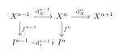
such that \operatorname{d}_I^{n-1} \circ f^{n-1} = f^n \circ \operatorname{d}_X^{n-1} and \operatorname{d}_I^{n-1} \circ \operatorname{d}_I^{n-2} = 0.To ensure the mapping is a quasi-isomorphism, we consider the pushout or simply the internal boundaries. Consider the object C^n = \operatorname{Coker}(\operatorname{d}_I^{n-1}) = I^n / \operatorname{im}(\operatorname{d}_I^{n-1}). The compatibility condition implies that f^n \circ \operatorname{d}_X^{n-1} = 0 when projected to C^n. Thus, f^n induces a morphism \bar{f}^n: \operatorname{Coker}(\operatorname{d}_X^{n-1}) \to C^n.
We combine X^{n+1} and C^n to construct a map into an injective object. By the property of enough injectives, embed the pushout of X^{n+1} \leftarrow \operatorname{Coker}(\operatorname{d}_X^{n-1}) \to C^n into an injective object I^{n+1}. This simultaneously defines \operatorname{d}_I^n: I^n \to I^{n+1} (factoring through C^n) and f^{n+1}: X^{n+1} \to I^{n+1} such that the diagram commutes.
By tracking the exact sequences, a standard application of the Five Lemma ensures that the induced map on cohomology \mathrm{H}^n(f^\bullet): \mathrm{H}^n(X^\bullet) \to \mathrm{H}^n(I^\bullet) is an isomorphism for all n. Thus, f^\bullet is a quasi-isomorphism, proving essential surjectivity. ◻
The crucial step for fully faithfulness relies on showing that K^+(\mathcal{I}) is orthogonal to acyclic complexes.
Lemma 2.1 (). Let A^\bullet be an acyclic complex in K^+(\mathcal{A}) (i.e., \mathrm{H}^n(A^\bullet) = 0 for all n), and let I^\bullet \in K^+(\mathcal{I}) be a bounded-below complex of injective objects. Then: \operatorname{Hom}_{K^+(\mathcal{A})}(A^\bullet, I^\bullet) = 0 In other words, every chain map f^\bullet: A^\bullet \to I^\bullet is homotopic to zero.
Proof. Let f^\bullet: A^\bullet \to I^\bullet be a chain map. We need to construct a collection of morphisms s^n: A^n \to I^{n-1} such that: f^n = \operatorname{d}_I^{n-1} s^n + s^{n+1} \operatorname{d}_X^n \quad \forall n \in \mathbb{Z} Since I^\bullet is bounded below, there exists some N such that I^n = 0 for all n < N. For all n \le N, we can safely define s^n = 0.
Now, assume by induction that we have constructed s^n up to degree n satisfying the homotopy relation. We want to find s^{n+1}: A^{n+1} \to I^n such that: f^n - \operatorname{d}_I^{n-1}s^n = s^{n+1}d_X^n Let us denote g^n = f^n - \operatorname{d}_I^{n-1}s^n. We first check that g^n \circ \operatorname{d}_X^{n-1} = 0: \begin{align*} g^n \operatorname{d}_X^{n-1} &= (f^n - \operatorname{d}_I^{n-1}s^n) \operatorname{d}_X^{n-1} \\ &= f^n \operatorname{d}_X^{n-1} - \operatorname{d}_I^{n-1} (f^{n-1} - \operatorname{d}_I^{n-2}s^{n-1}) \quad \text{(by induction hypothesis)} \\ &= \operatorname{d}_I^{n-1} f^{n-1} - \operatorname{d}_I^{n-1} f^{n-1} + 0 = 0 \end{align*} Therefore, g^n: A^n \to I^n factors through the cokernel \operatorname{Coker}(\operatorname{d}_X^{n-1}) = A^n / \operatorname{im}(\operatorname{d}_X^{n-1}).
Since A^\bullet is acyclic,
the short sequence 0 \to
\operatorname{im}(\operatorname{d}_X^{n-1}) \to A^n \to
\operatorname{im}(\operatorname{d}_X^n) \to 0 is exact,
which implies \operatorname{Coker}(\operatorname{d}_X^{n-1})
\cong \operatorname{im}(\operatorname{d}_X^n). Thus, g^n canonical factors through the
image: \bar{g}^n:
\operatorname{im}(\operatorname{d}_X^n) \to I^n We now have
the following diagram:
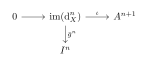
By construction, for any element in A^n, we have s^{n+1} \operatorname{d}_X^n = \bar{g}^n \operatorname{d}_X^n = g^n = f^n - \operatorname{d}_I^{n-1} s^n. This completes the induction step. Hence, f^\bullet \sim 0, so \operatorname{Hom}_{K^+(\mathcal{A})}(A^\bullet, I^\bullet) = 0. ◻
Proposition 2.1 (). If I^\bullet, J^\bullet \in K^+(\mathcal{I}) and f^\bullet: I^\bullet \to J^\bullet is a quasi-isomorphism, then f^\bullet is a homotopy equivalence (i.e., an isomorphism in K^+(\mathcal{I})).
Proof. Consider the mapping cone C(f)^\bullet. Since f^\bullet is a quasi-isomorphism, its cone C(f)^\bullet is an acyclic complex. Applying Lemma 1, since J^\bullet \in K^+(\mathcal{I}), we have \operatorname{Hom}_{K^+(\mathcal{A})}(C(f)^\bullet, J^\bullet) = 0. By the long exact sequence of \operatorname{Hom} groups associated with a mapping cone, this implies that f^\bullet induces a bijection on the homotopy Hom-sets, meaning f^\bullet is invertible in K^+(\mathcal{I}). ◻
By the general theory of localization of triangulated categories, the morphisms in the derived category are defined via fractions of the form s^{-1} \circ g, where s is a quasi-isomorphism. Proposition 2 guarantees that if the target and source lie in K^+(\mathcal{I}), any such quasi-isomorphism s is already invertible in the homotopy category K^+(\mathcal{I}).
Thus, the localized hom-sets \operatorname{Hom}_{\mathbf{D}^+(\mathcal{A})}(I^\bullet, J^\bullet) are isomorphic to the original hom-sets \operatorname{Hom}_{K^+(\mathcal{I})}(I^\bullet, J^\bullet). The functor is fully faithful. Combined with the essential surjectivity established in Part 1, K^+(\mathcal{I}) \to \mathbf{D}^+(\mathcal{A}) is an equivalence of triangulated categories.
Way-out Lemma
Remark 2.1 (The Induction Principle for Derived Categories). In classical homological algebra, proving a property for a long chain complex can be combinatorially overwhelming. The triangulated structure of the derived category offers an elegant solution: every bounded complex can be built by repeatedly taking mapping cones (forming exact triangles) of single objects shifted in degree.
The Way-out Lemma (originally formalized in Grothendieck’s SGA 4) is essentially the induction principle for derived categories. It states that to prove an isomorphism between two exact functors on the bounded derived category, it suffices to check the isomorphism on objects concentrated in a single degree.
To rigorously state and prove the lemma, we recall that an exact functor (or triangulated functor) between triangulated categories is a functor that preserves shifts F(X[1]) \cong F(X)[1] and sends exact triangles to exact triangles.
Theorem 2.1 (The Way-out Lemma (Bounded Version)). Let \mathcal{A} and \mathcal{B} be Abelian categories, and let \mathbf{D}^b(\mathcal{A}) and \mathbf{D}^b(\mathcal{B}) be their bounded derived categories.
Let F, G: \mathbf{D}^b(\mathcal{A}) \to \mathbf{D}^b(\mathcal{B}) be exact functors, and let \eta: F \to G be a natural transformation of exact functors.
If \eta_X: F(X) \to G(X) is an isomorphism for all objects X \in \mathcal{A} (viewed as complexes concentrated in degree 0), then \eta_{C^\bullet}: F(C^\bullet) \longrightarrow G(C^\bullet) is an isomorphism for all bounded complexes C^\bullet \in \mathbf{D}^b(\mathcal{A}).
Proof. The proof proceeds by induction on the “length” of the bounded complex. Since C^\bullet is bounded, there exist integers a \le b such that C^i = 0 for i < a and i > b. We define the length of the complex as \ell(C^\bullet) = b - a.
Base Case (\ell =
0): If \ell(C^\bullet) =
0, then a = b, meaning
C^\bullet is concentrated
entirely in degree a. Thus, C^\bullet \cong X[-a] for some object
X \in \mathcal{A}. Because both
F and G are exact functors, they commute with
shifts. The natural transformation gives a commutative square:
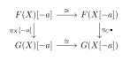
Inductive Step: Assume the theorem holds for all complexes of length less than n. Let C^\bullet be a complex of length n = b - a > 0. We can use "stupid truncation" to split C^\bullet. Let \sigma_{\le b-1}C^\bullet be the truncated complex up to degree b-1, and let C^b[-b] be the complex consisting only of the top term C^b in degree b.
There is a standard exact triangle in \mathbf{D}^b(\mathcal{A}): C^b[-b] \longrightarrow C^\bullet \longrightarrow \sigma_{\le b-1}C^\bullet \xrightarrow{+1} 0 Notice that \ell(C^b[-b]) = 0 and \ell(\sigma_{\le b-1}C^\bullet) = n - 1.
Since F and G are exact functors, applying them
yields two exact triangles in \mathbf{D}^b(\mathcal{B}). The natural
transformation \eta provides a
morphism between these exact triangles, forming the following
commutative diagram:
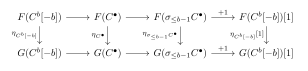
By the inductive hypothesis, the right vertical map \eta_{\sigma_{\le b-1}C^\bullet} is an isomorphism (since the length is n-1). By the base case, the left vertical map \eta_{C^b[-b]} is an isomorphism (since the length is 0).
By the Triangulated Five Lemma (a fundamental property of triangulated categories: if two out of three parallel maps between exact triangles are isomorphisms, the third one is too), the middle map \eta_{C^\bullet} must also be an isomorphism.
This completes the induction, and thus the theorem is proven. ◻
Remark 2.1 (Generalization). While we stated this for \mathbf{D}^b(\mathcal{A}) to ensure length induction terminates, classical Way-out Lemmas exist for unbounded derived categories \mathbf{D}^+(\mathcal{A}) or \mathbf{D}^-(\mathcal{A}) by imposing suitable homological boundedness conditions (e.g., functors having finite cohomological amplitude). For our geometric applications (like the Projection Formula), the bounded version is exactly what is needed.